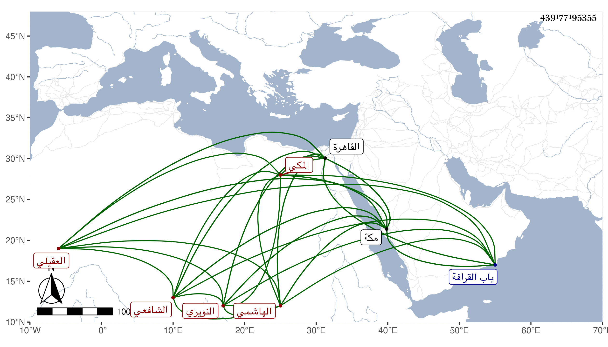

0902Sakhawi.DawLamic.ITO20230111-ara1.EIS1600.439177195355
Biography ID: 439177195355
483
أحمد بن محمد بن أحمد بن محمد بن أحمد بن عبد العزيز نسيم الدين أبو الطيب ابن صاحبنا الكمال أبي الفضل بن أبي الفضل الهاشمي العقيلي النويري المكي الشافعي ابن عم الذي قبله وسبط الخواجا جمال الكيلاني أمه أم هاني . ولد قبيل الستين بمكة ونشأ فحفظ القرآن والبهجة وعرضها في سنة إحدى وسبعين وأنا بمكة . وكنت ممن عرض علي وأقام في القاهرة مع أبيه يحضر معه . بل قرأ في التقسيم على العبادي وتردد لزكريا وغيره ولم يلبث أن مات في يوم السبت رابع رمضان سنة ثلاث وسبعين بالقاهرة مطعونا وصلى عليه بجامع المارداني ودفن عند الونائي بالتنكزية في باب القرافة وكان له مشهد حافل عوضه الله الجنة .
